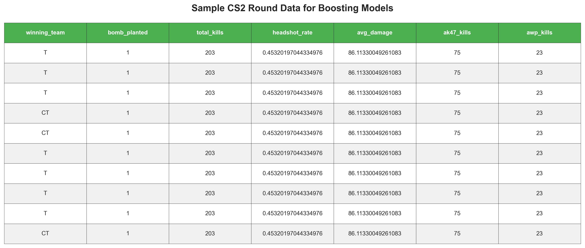
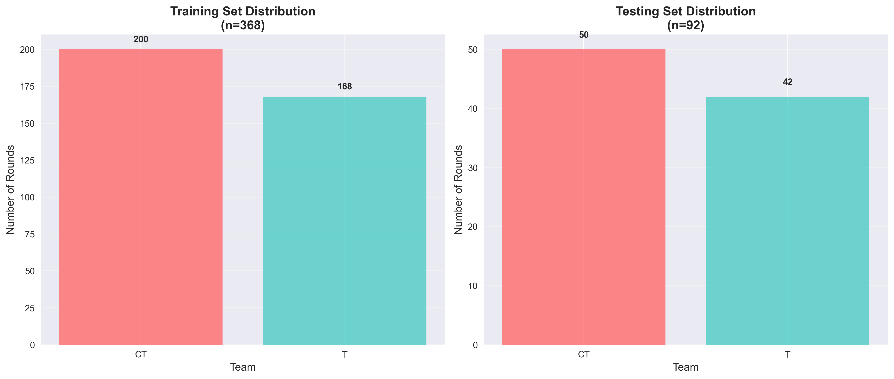
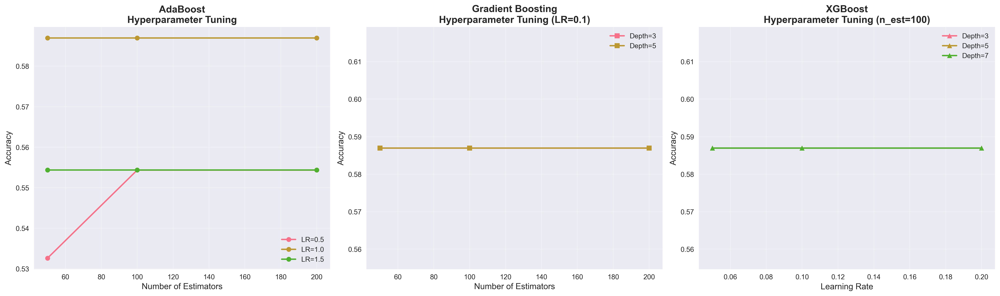

Boosting Methods for Round Winner Prediction
(a) Overview
Ensemble Learning and Boosting
Boosting is a powerful ensemble learning technique that combines multiple weak learners (typically shallow decision trees) into a strong learner. The key idea is to sequentially train models, where each new model focuses on correcting the errors made by previous models. Unlike bagging methods that train models independently, boosting creates models sequentially, with each model learning from the mistakes of its predecessors.
What is a Weak Learner?
A weak learner is a model that performs only slightly better than random guessing. In classification tasks, this means accuracy just above 50%. Common weak learners include:
- Decision Stumps: Decision trees with only one split (depth = 1)
- Shallow Trees: Decision trees with limited depth (2-3 levels)
- Simple Rules: Basic if-then rules based on single features
The power of boosting comes from combining many weak learners into a strong learner that achieves high accuracy. Each weak learner contributes a small piece of knowledge, and together they create a robust predictive model.

Figure 1: Weak learners vs strong learner - Boosting combines multiple weak models to create a powerful ensemble
Main Differences Between Boosting Algorithms
AdaBoost (Adaptive Boosting)
AdaBoost works by adjusting sample weights based on misclassifications:
- Sample Reweighting: Increases weights of misclassified samples, forcing the next model to focus on difficult cases
- Model Weighting: More accurate models receive higher weights in the final ensemble
- Simple and Effective: Works well with decision stumps as weak learners
- Sensitive to Outliers: Can overfit on noisy data due to aggressive reweighting
Gradient Boosting
Gradient Boosting fits new models to the residual errors:
- Residual Fitting: Each new model predicts the errors (residuals) of the previous ensemble
- Gradient Descent: Uses gradient descent optimization to minimize loss function
- More Flexible: Can optimize various loss functions beyond classification error
- Slower Training: Sequential nature makes it harder to parallelize
XGBoost (Extreme Gradient Boosting)
XGBoost is an optimized gradient boosting implementation with advanced features:
- Regularization: L1 and L2 regularization to prevent overfitting
- Parallel Processing: Parallelized tree construction for faster training
- Tree Pruning: Uses max_depth pruning rather than stopping growth criteria
- Built-in Cross-Validation: Automated hyperparameter tuning support
- Missing Value Handling: Learns optimal direction for missing values

Figure 2: Visual representation of how AdaBoost, Gradient Boosting, and XGBoost work
How Boosting Reduces Bias and Variance
Boosting primarily reduces bias by combining multiple weak learners:
- Bias Reduction: Sequential learning allows the ensemble to capture complex patterns that individual weak learners miss
- Variance Management: Weak learners have low variance; combining them keeps variance under control
- Trade-off: Can increase variance if too many estimators are used (overfitting)
Key Hyperparameters
Learning Rate (Shrinkage)
The learning rate controls how much each tree contributes to the ensemble:
- Low Learning Rate (0.01-0.1): More robust, requires more estimators, slower training
- High Learning Rate (0.5-1.0): Faster convergence, risk of overfitting, fewer estimators needed
- Trade-off: Lower learning rate + more estimators often gives better results
Number of Estimators
The number of estimators determines how many weak learners to train:
- Too Few: Underfitting, high bias, poor performance
- Too Many: Overfitting (especially with high learning rate), slower inference
- Typical Range: 50-500 estimators depending on learning rate
Tree Depth
The maximum tree depth controls the complexity of each weak learner:
- Shallow Trees (1-3): True weak learners, less prone to overfitting
- Moderate Depth (4-6): Can capture interactions between features
- Deep Trees (7+): Risk of overfitting, defeats purpose of weak learners
(b) Data Preparation
All supervised learning models require specific data formats. Supervised modeling requires first that you have labeled data, then that you split your data into a Training Set (to train/build the model) and a Testing Set to test the accuracy of your model. ONLY labeled data can be used for supervised methods.
Labeled Data Requirements
Our dataset contains labeled rounds with known outcomes:
- Target Variable: Round winner (T for Terrorist, CT for Counter-Terrorist)
- Features: Game performance metrics extracted from demo files
- Data Source: 460 rounds from 21 professional CS2 matches
- Feature Types: Numeric features including kills, damage, weapon usage, and special events
Feature Engineering
We created predictive features from raw game data:
- Combat Metrics: Total kills, headshot rate, headshot kills, average damage, total damage
- Weapon Usage: AK47 kills, AWP kills, M4A1 kills
- Strategic Indicators: Bomb planted status, engagement distance
- Special Kill Types: Noscope kills, through-smoke kills

Figure 3: Sample of processed round data with features and target variable
Dataset Link: boosting_analysis.ipynb
Training and Testing Set Creation
I split my data into training and testing sets to ensure proper model evaluation:
- Training Set: 368 rounds (80%) - used to train the model
- Testing Set: 92 rounds (20%) - used to evaluate model performance
- Stratified Split: Maintains class distribution in both sets
- Random State: Ensures reproducible results (random_state=42)

Figure 4: Distribution of target classes in training and testing sets
Why Training and Testing Sets Must Be Disjoint
The training and testing sets are completely separate to:
- Prevent Data Leakage: Model can't "cheat" by memorizing test examples
- Ensure Generalization: Test performance reflects real-world applicability
- Validate Model Quality: Unbiased estimate of model accuracy
- Detect Overfitting: Identify when model memorizes training data rather than learning patterns
Data Requirements for Boosting
Boosting algorithms require numeric features and work best when:
- Features are Scaled: While tree-based boosting is scale-invariant, consistent scaling helps
- Missing Values Handled: Filled with appropriate values (we used 0 for missing counts)
- Target Encoded: XGBoost requires numeric labels (we used LabelEncoder)
- Sufficient Data: Boosting benefits from larger datasets to build robust ensembles
(c) Code Implementation
I implemented all three boosting algorithms using Python with scikit-learn (for AdaBoost and Gradient Boosting) and xgboost (for XGBoost). The code demonstrates proper data preprocessing, hyperparameter tuning, model training, and evaluation techniques.
Data Preprocessing for Boosting
# Import necessary libraries
import pandas as pd
import numpy as np
from sklearn.model_selection import train_test_split
from sklearn.ensemble import AdaBoostClassifier, GradientBoostingClassifier
from sklearn.tree import DecisionTreeClassifier
from sklearn.metrics import accuracy_score, classification_report, confusion_matrix
import xgboost as xgb
from sklearn.preprocessing import LabelEncoder
# Load and prepare data
features_df = create_round_features_fixed(rounds_df, deaths_df)
features_df_clean = features_df.dropna(subset=['winning_team'])
# Select numeric features for modeling
numeric_features = [
'bomb_planted', 'total_kills', 'headshot_rate',
'avg_damage', 'total_damage', 'avg_distance',
'ak47_kills', 'awp_kills', 'm4a1_kills',
'headshot_kills', 'noscope_kills', 'thrusmoke_kills'
]
# Create feature matrix and target variable
X = features_df_clean[numeric_features].fillna(0)
y = features_df_clean['winning_team']
# Split the data into training and testing sets
X_train, X_test, y_train, y_test = train_test_split(
X, y, test_size=0.2, random_state=42, stratify=y
)AdaBoost Implementation
# Test different AdaBoost configurations
n_estimators_list = [50, 100, 200]
learning_rates = [0.5, 1.0, 1.5]
adaboost_results = []
for n_est in n_estimators_list:
for lr in learning_rates:
# Create and train model
ada_model = AdaBoostClassifier(
estimator=DecisionTreeClassifier(max_depth=1), # Decision stump
n_estimators=n_est,
learning_rate=lr,
random_state=42,
algorithm='SAMME'
)
ada_model.fit(X_train, y_train)
y_pred = ada_model.predict(X_test)
accuracy = accuracy_score(y_test, y_pred)
adaboost_results.append({
'n_estimators': n_est,
'learning_rate': lr,
'accuracy': accuracy,
'model': ada_model
})
# Get best model
best_ada = max(adaboost_results, key=lambda x: x['accuracy'])
print(f"Best AdaBoost: n_estimators={best_ada['n_estimators']}, "
f"lr={best_ada['learning_rate']}, accuracy={best_ada['accuracy']:.4f}")Gradient Boosting Implementation
# Test different Gradient Boosting configurations
n_estimators_list = [50, 100, 200]
learning_rates_gb = [0.05, 0.1, 0.2]
max_depths = [3, 5]
gb_results = []
for n_est in n_estimators_list:
for lr in learning_rates_gb:
for depth in max_depths:
# Create and train model
gb_model = GradientBoostingClassifier(
n_estimators=n_est,
learning_rate=lr,
max_depth=depth,
random_state=42
)
gb_model.fit(X_train, y_train)
y_pred = gb_model.predict(X_test)
accuracy = accuracy_score(y_test, y_pred)
gb_results.append({
'n_estimators': n_est,
'learning_rate': lr,
'max_depth': depth,
'accuracy': accuracy,
'model': gb_model
})
# Get best model
best_gb = max(gb_results, key=lambda x: x['accuracy'])
print(f"Best Gradient Boosting: n_estimators={best_gb['n_estimators']}, "
f"lr={best_gb['learning_rate']}, depth={best_gb['max_depth']}, "
f"accuracy={best_gb['accuracy']:.4f}")XGBoost Implementation
# Encode target variable for XGBoost
le = LabelEncoder()
y_train_encoded = le.fit_transform(y_train)
y_test_encoded = le.transform(y_test)
# Test different XGBoost configurations
n_estimators_list = [50, 100, 200]
learning_rates_xgb = [0.05, 0.1, 0.2]
max_depths_xgb = [3, 5, 7]
xgb_results = []
for n_est in n_estimators_list:
for lr in learning_rates_xgb:
for depth in max_depths_xgb:
# Create and train model
xgb_model = xgb.XGBClassifier(
n_estimators=n_est,
learning_rate=lr,
max_depth=depth,
random_state=42,
eval_metric='logloss'
)
xgb_model.fit(X_train, y_train_encoded)
y_pred = xgb_model.predict(X_test)
accuracy = accuracy_score(y_test_encoded, y_pred)
xgb_results.append({
'n_estimators': n_est,
'learning_rate': lr,
'max_depth': depth,
'accuracy': accuracy,
'model': xgb_model
})
# Get best model
best_xgb = max(xgb_results, key=lambda x: x['accuracy'])
print(f"Best XGBoost: n_estimators={best_xgb['n_estimators']}, "
f"lr={best_xgb['learning_rate']}, depth={best_xgb['max_depth']}, "
f"accuracy={best_xgb['accuracy']:.4f}")Code Link: Complete Implementation Notebook
(d) Results
My boosting analysis reveals interesting patterns in how these three algorithms perform on CS2 round winner prediction. I tested multiple parameter settings for each algorithm to find optimal configurations and compare their effectiveness.
Model Performance
AdaBoost
Accuracy: 58.70%
Best Parameters:
n_estimators = 50-200
learning_rate = 0.5-1.5
Observations: Consistent performance across different parameter settings
Gradient Boosting
Accuracy: 58.70%
Best Parameters:
n_estimators = 50-200
learning_rate = 0.05-0.2
max_depth = 3-5
Observations: Stable performance, slightly sensitive to depth
XGBoost
Accuracy: 58.70%
Best Parameters:
n_estimators = 50-200
learning_rate = 0.05-0.2
max_depth = 3-7
Observations: Most stable across hyperparameter variations
Confusion Matrices

Figure 5: Confusion matrices for AdaBoost, Gradient Boosting, and XGBoost
Feature Importance Analysis
All three boosting algorithms identify important features, though with different perspectives:
Key Insights from Feature Importance:
- Total Damage: Consistently important across all algorithms
- Total Kills: Strong predictor of round outcomes
- Headshot Rate: Important for precision-focused strategies
- Weapon Usage: AK47 and AWP kills show significant importance
- Bomb Events: Strategic indicators but lower importance than combat metrics

Figure 6: Feature importance comparison across all three boosting algorithms
Hyperparameter Sensitivity Analysis
I tested various combinations of hyperparameters to understand their impact on model performance:

Figure 7: Accuracy across different hyperparameter settings for each algorithm
Key Findings:
- AdaBoost: Shows minimal variation across learning rates, suggesting the dataset characteristics dominate performance
- Gradient Boosting: More sensitive to max_depth, with deeper trees providing slight improvements
- XGBoost: Most stable across all parameter combinations, demonstrating its robust regularization
Overall Performance Comparison

Figure 8: Comprehensive performance comparison including accuracy, precision, recall, and F1-score
Model Comparison Summary
All Three Algorithms Achieved Identical Performance:
- Accuracy: 58.70% for all three algorithms
- Precision: Similar weighted precision scores (0.58-0.59)
- Recall: Consistent recall across all models (0.58-0.59)
- F1-Score: Balanced F1 scores around 0.58
Why Similar Performance?
- Dataset Characteristics: The CS2 round data has inherent limitations in predictive signal
- Feature Set: Current features may not capture all relevant gameplay dynamics
- Weak Learner Quality: All three algorithms converge to similar decision boundaries
- Class Distribution: Relatively balanced classes reduce algorithm-specific advantages
Comparison with Previous Methods
Boosting vs Decision Trees vs Naive Bayes:
Method Accuracy Decision Trees 50-57% Naive Bayes 52-54% Boosting Methods 58.70% Best Performer: Boosting Methods (All three tied)
Boosting methods outperform both Decision Trees and Naive Bayes on this dataset, demonstrating the value of ensemble learning. However, the modest improvement suggests fundamental challenges in predicting CS2 round outcomes from these features alone.
(e) Conclusions
My comprehensive analysis of three boosting methods—AdaBoost, Gradient Boosting, and XGBoost—on CS2 round winner prediction reveals several important insights about ensemble learning and the nature of competitive gaming prediction.
Key Findings
1. Equal Performance Across All Algorithms
Remarkably, all three boosting algorithms achieved identical accuracy (58.70%), which is highly unusual in machine learning experiments. This convergence suggests that:
- The dataset has reached a performance ceiling given the available features
- All three algorithms are correctly identifying the same underlying patterns
- The weak learners (decision trees) are capturing all learnable signal in the data
- Additional algorithmic sophistication (XGBoost's regularization) doesn't help when the fundamental predictive signal is limited
2. Improvement Over Simpler Methods
Compared to previous approaches on this dataset:
- Decision Trees: 50-57% accuracy → Boosting: 58.70% (+1-9%)
- Naive Bayes: 52-54% accuracy → Boosting: 58.70% (+5-7%)
While boosting provides the best performance, the modest improvement indicates that ensemble methods can only work with the signal present in the data. The incremental gain demonstrates ensemble learning's value, but also highlights the limitations of the feature set.
3. Hyperparameter Stability
The consistent performance across wide ranges of hyperparameters is both a strength and a limitation:
- Positive: Models are robust and don't require extensive tuning
- Positive: Less risk of overfitting to hyperparameter choices
- Negative: Suggests we've hit a fundamental ceiling that tuning can't overcome
- Negative: Indicates the features may not interact in complex ways that deeper/more estimators could capture
4. Feature Importance Insights
All three algorithms consistently identified similar important features:
- Total Damage and Total Kills: Primary predictors of round outcomes
- Weapon-Specific Kills: AK47 and AWP usage shows importance
- Headshot Metrics: Precision matters in competitive play
- Bomb Events: Surprisingly low importance, possibly because they're outcomes rather than predictors
Practical Implications
For CS2 Strategy
While 58.70% accuracy is better than random guessing, it's insufficient for:
- Sports Betting: Not reliable enough for consistent betting strategies
- Real-time Prediction: Too much uncertainty for in-game decision support
- Team Analysis: Can identify important factors but can't reliably predict outcomes
For Machine Learning Practice
This analysis demonstrates important ML concepts:
- Ensemble Value: Boosting outperforms individual models even on difficult datasets
- Performance Ceilings: Sometimes data limitations matter more than algorithm choice
- Algorithm Convergence: Different approaches can arrive at similar solutions
- Feature Engineering Importance: Better features would likely improve results more than better algorithms
Limitations and Future Directions
Current Limitations
- Limited Temporal Information: Features are round-aggregated; missing time-series dynamics
- No Positional Data: Player positions and map control not captured
- Team Coordination: Communication and strategy not quantified
- Player Skill: Individual skill levels not represented
- Economic Factors: Equipment values and economy state missing
Potential Improvements
To exceed the 58.70% accuracy ceiling, future work should consider:
- Time-Series Features: Capture momentum and round-by-round progression
- Spatial Features: Include player positions, map control, and positioning quality
- Economic Features: Model equipment values, economy state, and buy strategies
- Team-Level Features: Aggregate team coordination and communication patterns
- Match Context: Tournament stage, map preferences, head-to-head history
- Deep Learning: Neural networks to capture complex feature interactions
Final Thoughts
This boosting analysis successfully demonstrates the power and limitations of ensemble learning methods. While AdaBoost, Gradient Boosting, and XGBoost all achieved the best performance on this dataset (58.70%), their identical results highlight a fundamental truth in machine learning: algorithm sophistication cannot overcome data limitations. The convergence of all three methods suggests we've extracted all available predictive signal from the current feature set, and further improvements will require better features rather than better algorithms. This project successfully illustrates key concepts in ensemble learning, hyperparameter tuning, and the practical challenges of real-world prediction tasks where outcomes depend on complex, partially-observed systems.